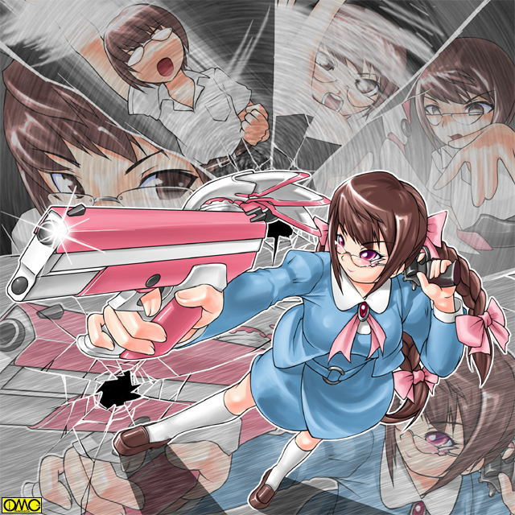

これはセーラとファルコンに決着のついた日。
百紀市のあるアパートでは老夫婦が困り果てていた。『押し売り』である。
「いえ。市販のもので間に合ってますから」
枯れた男性が弱々しく断りを入れる。
「ダメダメ。市販のは弱くてゴキブリが死なないから。その点これは大丈夫。少しの量ですぐに死ぬから。今なら一本を半額の千円で売りますよ」
どう見ても堅気には見えない男が二人。「セールストーク」を繰り広げていた。
ドアを閉められないように靴の先をねじ込む悪質さである。
「千円！？ それはちょっと高いでしょう」
「結果的には安上がりなんです。ほんとに少しですみますから。しかも撒いておけば害虫が匂いを嫌って寄り付かない効果があるんです。ただ人間にはわからない匂いなんですがね」
この男たちは一時間も粘っている。
他の住人も助けてはくれない。そもそも昼間である。仕事に出ているものも多数で、無職である老夫婦が狙われた。
結局は断りきれず泣く泣くそれを買う羽目になった。しかも二本。
二千円でおっぱらうつもりであった。
「まいどありー」
どうやら立場はどうでもよく、とにかく金になればいいらしい。
恨みがましい老紳士の視線も気にならないらしい。
意気揚々と出てくる二人組
「あーぼろいな。中身はただの水なんだけどな」
「そりゃ匂うはずもありませんぜ」
馬鹿笑いをするチンピラたち。押し売りに加えていんちき商売だった。
季節は夏。上機嫌だったが暑さに顔をしかめる。
「しかし暑いな」
「じゃあ喫茶店にでも」
「バカヤロウ。せっかくの儲けを吐き出す気かよ。どこかの影で」
直射日光を避けるべく影を探していた。
その二人組みが突然影に覆われた。
「なんだ？ 曇ったのか」
だがそんな様子はない。
「ふむ。日陰者らしく日陰を探しているのか？」
上のほうから野太い声がする。不思議に思い声のほうを見ると悲鳴を上げた。
「のわひゃあああああっ」
二メートルを越える雲突く大男がそこにいたのだ。
いわゆるガクランを着ているが、それでも筋骨隆々なのが見て取れる。
「イカンな。年寄りのなけなしの金を騙し取るとは。今すぐ金を返して謝ってこい。お天道様は見てるもんだ」
まだ若いのに妙に歳の行ったようなことを言う。顎の割れた四角い顔の大男。
「な……なんだぁ。てめえは？」
「俺か？ 俺はな……」
大男は間を取ると左腕をひきつけ、右手を左肩に当てる。そしてそれを右下に降りながら高らかに言う。
「俺は太陽の男。番長・岡元！」
戦乙女セーラ
ＥＰＩＳＯＤＥ２５「飄々」
そしてこの日。入院していた友紀を迎えに（学校をサボって）出向いた清良は、そのままキャロルバイクモードで百紀高校へと出向いていた。
既にファルコンの記憶を一時的に融合されたことで、セーラの従者であるキャロルについては知識を得ていた。
ちなみに初めての「タンデム」である。
ただ猫の姿を見ていたので大柄な清良と、そんなに大きくないとはいえど自分の二人ではかわいそうだなと感じていたが。
退院してそのままだから私服のワンピースである。
清良はいつものガクラン。既に衣替えを過ぎているが「着てないと落ち着かない」と着用している。
「ねえ。キヨシ。あたしは本当にいいから。健康状態も問題ないし」
「いや。やっぱ奴に撃ったことを謝らせる」
友紀がファルコンに取り付かれていたとき、結果としてそれを解放したのはジャンスの狙撃だった。
手を出せないでいたセーラとしては助けられた形である。
しかし影から友紀を撃ったことがどうしても気に入らず、こうして出向いていた。
交差点で左側の道路からサイドカーが走ってきた。
（あれ？）
最初に気がついたのは同類のキャロルである。
ライトの明滅で「挨拶」をする。それに対してサイドカーも同様に返した。
これはどちらのライダーも関与していない。マシン同士が勝手にやっていた。
そのまま清良から見たら直進の道路でサイドカーと並ぶ。現在は信号待ち。
「あっ。会長。高岩さんですよ」
カーゴにいた森本がはしゃぐように言う。
「高岩だと？」
ヘルメットのバイザーをあげる。その顔は
「げっ。伊藤」
ちなみに清良はちゃんとヘルメットをしていたが、大柄な体躯がヘルメットをしていても判別しやすかったのである。
奇しくも両雄…というか「ダブルヒロイン」が併走することに。
しかしここは負けず嫌いの二人。青になったとたんにまるでゼロヨンのように飛び出す。
「キャロル。もっと飛ばせ」
「友紀様が乗っているのに無理ですよぉ」
「ドーベル。こんな奴らとつるむな」
「いやいや。たまにはよろしいかと」
結局、目的地まで仲良く出向いてしまった。
暴走族の集会場所。
「なんだと？ またあのやろうが」
「はい。俺達をぼこぼこにしたあげく金をかえさせ、さらには便所掃除までやらされました」
報告しているのは老夫婦に押し売りを働いたチンピラ二人組み。
「くそぉ。俺たちの重要な資金源を潰す気か？」
いんちき殺虫剤で金儲けというのは効率が悪いような…
「岡元のやろう。いつも邪魔しやがって。何とかしめてやりたいが」
「無理ですよ。あいつにゃ並の男が２０人がかりでも勝てませんよ」
「くそう。力があれば」
まるで自分たちが善玉であるかのようなコメントを発する暴走族ヘッド。五木であった。
（くくく。いいぞ。お前のようなしぶとさ。私は気に入った）
浮遊する邪悪な魂とシンクロしてしまった。それが五木の命取り。
例によって例のごとくとり付かれる。
「くおおおおっ」
異形へと転じる暴走族ヘッド。
「ヘッド？」
「いつ……き……さん？」
最初は心配していた者達もその姿を見て我先に逃げ出す。
どうも「怪物」という以前の問題のようだ。
そしてアマッドネスと化した五木は、そのまま自分の配下を手にかけていく。
「ここか。ジャンスの通っている高校ってのは」
百紀高校。これがこの面々の目的地であった。まだあったことのない清良が言う。
「高岩。何をしに来たか知らんが押川に会うと言うなら仕方ない。『覚悟』をしとけよ」
あまりに珍しい礼の忠告である。それも清良相手に。
「おいおい。随分と副会長様はお優しいな」
「いつの話をしている。もう会長だ」
「ああ。当選すると言ってたからな。おめでとさん」
祝うつもりがカケラもない祝辞である。
そんな会話をしていたら中から山のような大男がのっしのっしとやってきた。まるで怪獣である。
「な…なんだ？」
さすがの清良も引き気味。そして通せんぼをするかのように立ちふさがる。
「なんだぁ。誰かと思えば王真の生徒会長か」
通せんぼは豪腕番長。岡元だった。彼はここの在校生なのである。
「あんたか。ちょうどいい。押川に取り次いでもらいたい」
どうやら周知の仲らしい。ただし友好ムードはない。
「お…おう。俺もその押川に用がある」
清良も負けじと続く。岡元は初対面の清良を一瞥する。
「貴様はダメだ」
「なんでだ？」
「顔が悪い」
どうやら人相で判断したらしい。当然黙ってられない清良。
「て…てめぇに人のこといえるのか？」
「ふん。順にあいたきゃ俺を倒して行け」
（どうしてそうなんの？）
この乗りについていけない友紀。それは礼も同様だった。
「まったく、番長とか言われていい気になってないか？ しょせん悪が悪を食っているだけだろう」
どうやら清良だけが礼の悪口雑言の対象ではないらしい。
「確かに。貴様が正義なら俺は悪だ」
礼のそれに対して妙にかっこいい口調で言う「番長」。
「あんたを倒せば逢わせてくれるんだな？」
笑みを浮かべている清良。指を鳴らしてまでいる。
「セーラ様」
相手が一応人間なので窘めるキャロル。照れ笑いの清良。
「いや。こういう相手も久しぶりでな。ちょっと嬉しくなっちゃって」
本気で笑顔である。
「もう。ケンカが好きなんだから」
膨れて言う友紀。
「いえ。違うと思います。きっと高岩さんはあなたを好きで守りたいから戦うんじゃないかと」
「「な！？」」
森本のとんでもない発言に赤くなる清良と友紀。
「だって一緒のバイクですよ。自分がこけたら道連れですよ。それでも乗せるということは絶対に守るんだという思いがあるからでしょう。女の人もきっと信頼しているから後ろに乗るんですよ。つまりお二人は恋人同士なんだと。そうでしょう？」
本人は大真面目である。二人は照れるばかり。
「ば……バカ言うな。コイツはただの幼なじみで」
「そうよ。まだキスもしてないのよ」
（う…確かにアレは呼吸を確保するためだし、しかも女同士だからノーカウントだろうが…じゃなくて気絶していたから覚えちゃいねえだろうけどよ）
友紀を助けるためのマーメイドフォームでの行為を覚えていないことに軽く凹む。
「高岩？ お前がうわさに名高い高岩か。面白い。一度手合わせしたいと思ってたんだ」
「ほう。光栄だな。で、あんたの名前は？」
既に本来の目的を見失っている清良。
もっともクレームをつけるつもりでいたから、確かに争うつもりではいたが別の形で発散されそうだ。
「ふむ。名乗らんのも失礼か。ならば名乗ってやろう」
言うなり大男は間を取る。そしてマントを広げるかのようなアクションを取る。
「輝く太陽のエレメンツ。番長・岡元」
「待て。確か『俺は太陽の男』というのが名乗りとも聞いたぞ」
変なところにクレームをつける礼。
「どっちだっていいさ。強いんならな」
「おう。俺の強さは泣けるで」
（何で関西弁なのかしら？）
友紀の内なるツッコミ。戦闘開始寸前で
「あ。ばんちょおーっっっ。その人たちはいいんだよぉ」
ジャンバースカートの生徒が校舎から出てきた。
童顔。丸めがね。髪はやや長めで、襟足を輪ゴムで留めている。
胸はまったくないが女の子走りで駆け寄ってくる。
「順！」
途端に岡元から気合が抜けた。
「順？ コイツが押川順なのか？」
「うん。そうだよ」
スカート姿の生徒は明るく返答する。
「女だったとはな」
突っ込みは入らない。確かにそう見える。
「高岩…信じられないと思うが、こいつは男だ」
礼が訂正する。
「うそっ？」
思わずもう一度見返す清良。華奢な体躯。女顔。
「おいおい待てよ。胸が平たいのが男だってんなら、ブレイザは男だってことになるぜ」
真顔で言い放つ清良。血管が浮き上がる礼。つい反撃する。
「久々に殺してやりたくなってきたな」
「やるか？」
一触即発の雰囲気が漂う。
「あの…どうして男バージョンでそれがけんかの種になるんです？」
キャロルの冷静な突っ込み。我に帰る二人。矛先を元に戻す。
「おい。なんだってこんなふざけたかっこうしているんだ？」
とりあえずの突っ込みどころだった。
「……だって……仕方ないんですよ。戦い続けてそのたびに男としての部分が消えてしまって。今ではもう女の格好じゃないと落ち着かなくて」
「な……なんだって？」
清良にしてみたら懸念を具体化した存在がここにいた。
「それじゃ俺も戦い続けると、いずれこうなるというのか？」
その清良の言葉を聞いて思わず想像する友紀。
「ゆうきぃー」
語尾が上がる喋り方で呼びかけるセーラー服姿の「清良」。
「一緒に帰りましょお。それでケーキバイキングにいこうねっ」
くねくねとしながら笑顔で腕を組む「清良」
自分の想像で青ざめる友紀。
「ダメよキヨシ。そんな風になったらあたし絶対許さないからね」
「ば……馬鹿なことを言うな。俺がこんな風に……」
そこで普段を思い出す。女性化が進むとやたらにぶりっ子になることを。
「ふん。ぶりっ子の第一人者だからな。思い当る節がありすぎるんだろう」
ここぞとばかしにやり返す礼。
「黙ってろ。扁平胸」
もはや男女問わず泣き所だった。
「なんだと！」
「だからどうして会長の胸が薄いとまずいんです？」
「うるさい。なんか知らないが魂レベルでむかつくんだ！」
「まぁまぁ落ち着いてください」
笑顔で宥める順。
「「お前が言うな！！」」
息ぴったしで突っ込む清良と礼。
「すいません。軽いジョークですよ」
「ったく。洒落にならないっつーの」
軽くは言うが未だに女性化に対する恐怖は消えていない。
「あとそれから。僕が女子制服を着ているのは単純に似合うからです」
くるっと回って見せる。スカートがふわりと舞い上がる。
ちなみに借り物ではなくて自前である。
女の子のようなにっこりとした笑みに、もう突っ込む気もうせた清良である。
そのころ、暴走族が岡元への仕返しとばかりに百紀高校へと向かっていた。
リーダー以外は精気のない目をしていた。
礼とは周知の仲ということもあり、全員まとめて応接室に通される。
「さて。伊藤さんはいつもの情報交換ですね」
とりあえず普通の男子制服に着替えた順が仕切る。
王真高校チームは礼が大股開きで座っている。隣の森本はちゃんと膝を閉じて座っている。
福真高校チームは清良がふんぞり返っている。それをきちんと膝をそろえた友紀が窘めている。
使い魔たちは学校の外で待機だ。
「ああ。だが高岩と一緒なら日を改めるべきだったな」
「そりゃあこっちの台詞だぜ」
一時ほどではないが険悪な関係なのは変わらない。
「まぁまぁ。高岩さんとは初対面だから先にとりあえずご挨拶を」
一応は初対面の清良に向けて挨拶をする順。
「初めまして。百紀高校２年の押川順です。どうかよろしく」
初対面だからかと同学年相手に敬語で喋る。
挨拶をされたら返すのが礼儀。もちろんそのあたりは女性の方がきちんとしている。
「あ。こちらこそ。福真高校２年の野川友紀です」
「同じく。２年の高岩清良だ」
「あ。初めまして。王真高校１年の森本要です。生徒会の書記をしています」
「森本。お前は初対面じゃないだろう」
「いえ。あちらの野川さんとは」
「む…確かに」
珍しく指摘される礼。端正な顔に笑顔のマスク。
「初めまして。王真高校生徒会長の伊藤礼です。以前に一度だけお会いしましたね」
それは礼が福真高校に乗り込んだ時の話。友紀はそれを覚えていた。
そして本来の目的であるクレームとなったのだが
「ああ。やっぱりそれですか」
「てめえ。撃っといてそれか？」
清良はかっかしていた。
「頭に血が上ると敵の思うつぼですよ」
あくまでニコニコとしている順。
「なんだとこの」
対して清良はカリカリしていた。
「やめてキヨシ」
あまりに飄々とした順の態度に清良は切れていた。それを止める友紀。
しかし平然と順は言葉を紡ぐ。
「だってあのままじゃいつまでたっても手を出せなかったでしょう？」
「そ……そりゃあ」
図星だった。現に変身しないことでファルコンを出現させないつもりでいた。
そしてそれが無理な手というのもわかってはいた。
「だから代りにやったんですよ」
実は大嘘である。
何しろファルコンの正体が友紀とは知らなかったのだから。
乗り込んでくるのは目前の得物を取られたことに関してと思っていたのだ。
しかし事情を知るや機転を利かせて口からでまかせ。
可愛い顔して腹黒というのが押川順という少年だった。
「ふん。いいようにあしらわれて単細胞め。だから覚悟しておけといったんだ」
「テメエはどっちの味方だ」
やり込められて収まらない清良が怒鳴る。
「少なくともアマッドネスがかまなけりゃ味方じゃない」
礼の偽らざる本音である。
校庭が騒然となっていた。それも道理。
暴走族が乗り込んできたのだ。
そしてそれを迎え撃つのが番長。岡元三郎。校門で通せんぼして立ちはだかっていた。
「なんだ？ 俺にやられた仕返しにこんな人数で来たのか」
しかも鉄パイプや釘バットなど物騒な得物を持っていた。
「くくく。そうだ。お前は強いらしいからなぁ」
「恥ずかしくないのか。一人相手に。まぁいい。有象無象がいくらきても俺の敵ではない。むしろ就職活動の方が手ごわい」
岡元は三年であった。
「ふふふ。有象無象かよく見ろ」
五木の姿が変貌していく。
応接室。「いつもの感覚」を感じ取る三人。
「これは……野郎ッ！？ アマッドネスか」
立ち上がる清良。
「いくら岡元が強くともアマッドネス相手じゃ」
続いた形の礼。両者共に戦う顔つきになっている。
既に正体を知るものしかいない応接室である。
清良は右手を天に。左手を地に向けた。
「へん。ちょうどいい。いらついていたのをストレス発散させてもらうぜ」
礼は右腕を肩の高さで伸ばした。左手をへその位置に添えた。
「貴様は引っ込んでいろ。悪党成敗は俺の仕事だ」
そう息巻いていたのだが……
「ふふふふ。俺は力を得た。最強の生命力をもつ存在になった」
五木の肌が黒く変色していく。腕は節くれだつ。
特攻服を突き破り黒く平べったい甲虫らしい巨大な羽根が出現する。
体長ほどの長さの触角が後方になびく。
夏場に台所によく出るのによく似たその姿は…
応接室。硬直している清良と礼。「変身ポーズ」が進まない。
友紀は五木の変身が完了した途端に目をそむけた。あれを好きな女はまずいない。
「あー。さしあたってコックローチアマッドネスですかね」
のん気に言う順。
「番長いってましたっけ。いんちき殺虫剤を売っていた連中をしめたって。そのあげくゴキブリ怪人だなんて。ショッカーのゴキブリ男みたいですねぇ。あはははは」
どうやら特撮が好きらしい。その能天気な笑いになれているだけ、硬直が解けたのは礼の方が早かった。
「そ、そうだな。ワルはワル同士。互いに殴り合ってストレスを発散させるべきだろう」
へそに出現していた光の渦が消えた。戦う意思が消えたことを意味する。
「お、お前こそ成敗するとか言ってただろうが」
こちらも一気にポーズを崩す清良である。
いくら男でもいやなものはいやであった。にらみ合って進まない。
ただ先刻と逆で押し付け合いだが。
「はいはい。触りたくないんでしょ。ここは射撃主体の僕が行きますよ。それに僕の学校だしね」
言うなり順は右手をひきつけ、真上に顔を上げ左手を高々と掲げ上げる。
空間から弓が出現する。弦ははられていない。
それはまだいいとしても黒とピンクに塗り分けられている奇妙なデザインだ。
どうも銃のグリップ同士でジョイントしたようなイメージだ。
黒い部分がリボルバー。ピンクの部分がオートマチックのイメージ。
弓を手にして真正面に運ぶ。同時に右手を伸ばして弓を引くようなポーズを取る。
そしてそれを「ぴぃん」と爪弾くように動かす。同時に静かに宣する。
姿が変る。清良との初対面で着ていたジャンパースカート姿に。
髪が伸び勝手に三つ編みになって行く。根元がリボンで飾られる。
元々女性的だったが、肌の色がそれとわかるほど白く。
胸も膨らむ。
完了して順。いや戦乙女が名乗りをあげる。
「射抜く戦乙女。ジャンス」

このイラストはＯＭＣによって作成されました。
クリエイターのていくあうとさんに感謝！